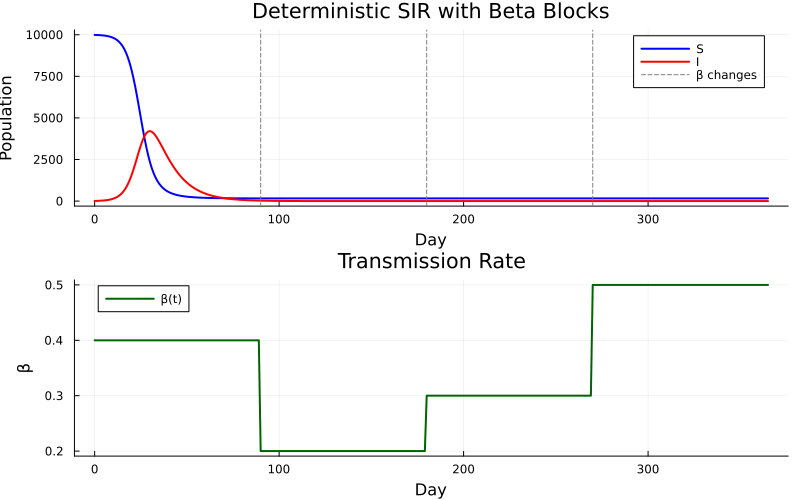
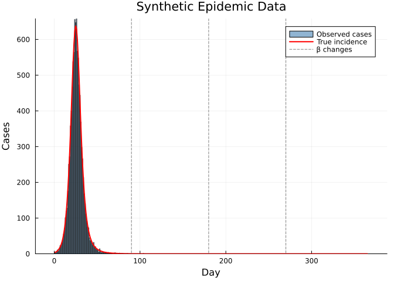
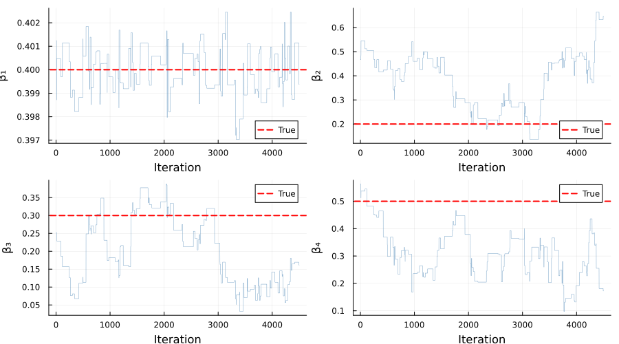
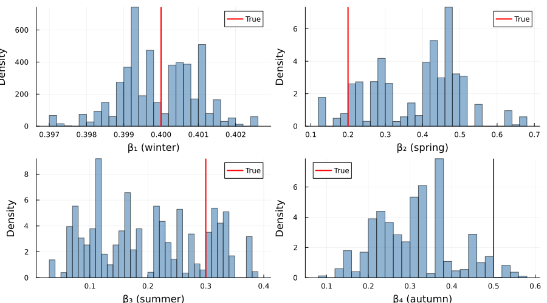
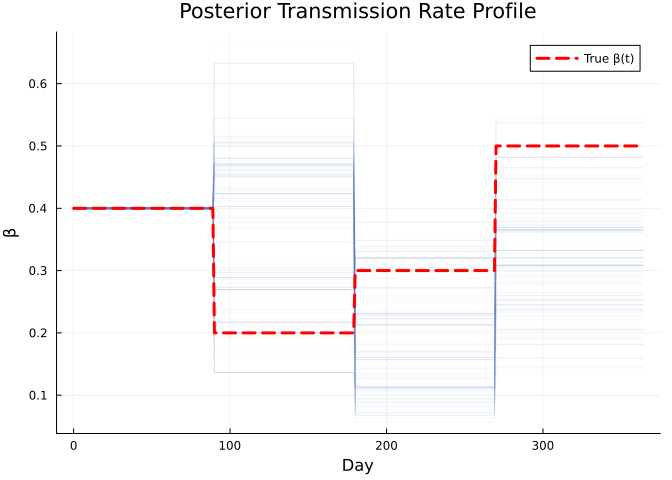
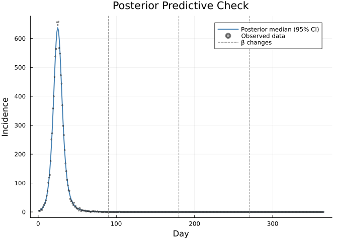

Piecewise-Constant Transmission Rate (Beta Blocks)
Introduction
Many infectious disease outbreaks exhibit time-varying transmission due to seasonality, interventions, or behavioural changes. A common and practical approach is to model the transmission rate β as a piecewise-constant (step) function over predefined time intervals — often called “beta blocks”.
This vignette demonstrates:
- Defining a deterministic discrete-time SIR model with piecewise-constant β via
interpolate() - Simulating an epidemic with seasonal β changes
- Generating synthetic Poisson-observed case data
- Fitting the model with MCMC (random-walk Metropolis) to recover the β values from data
- Visualising posterior distributions and model fit
The model is deterministic — new infections are computed as S * p_SI (a continuous quantity) rather than drawn from Binomial(S, p_SI). This makes the state evolution reproducible and the likelihood exact with a single particle, which is ideal for fast inference.
using Odin
using Distributions
using Plots
using Statistics
using Random
using LinearAlgebra: diagmModel Definition
The model tracks susceptible (S), infectious (I), and daily incidence. The transmission rate β is a step function defined by breakpoint times and corresponding values.
sir_beta_blocks = @odin begin
# State updates (deterministic)
update(S) = S - new_inf
update(I) = I + new_inf - new_rec
initial(S) = N - I0
initial(I) = I0
# Incidence resets each integer time step
initial(incidence, zero_every = 1) = 0
update(incidence) = new_inf
# Deterministic transition probabilities
p_SI = 1 - exp(-beta_t * I / N * dt)
p_IR = 1 - exp(-gamma * dt)
new_inf = S * p_SI
new_rec = I * p_IR
# Piecewise-constant transmission rate
beta_times = parameter(rank = 1)
beta_values = parameter(rank = 1)
beta_t = interpolate(beta_times, beta_values, :constant)
# Fixed parameters
N = parameter()
I0 = parameter()
gamma = parameter()
# Data comparison: observed cases ~ Poisson(incidence)
cases = data()
cases ~ Poisson(incidence + 1e-6)
endOdin.DustSystemGenerator{var"##OdinModel#277"}(var"##OdinModel#277"(3, [:S, :I, :incidence], [:beta_times, :beta_values, :N, :I0, :gamma], false, false, true, false, true, Dict{Symbol, Array}()))Simulation Scenario
We define four seasonal β blocks over one year (365 days):
| Period | Days | β | Interpretation |
|---|---|---|---|
| Winter | 0–89 | 0.4 | Moderate transmission |
| Spring | 90–179 | 0.2 | Low transmission |
| Summer | 180–269 | 0.3 | Rising transmission |
| Autumn | 270–364 | 0.5 | High transmission |
true_beta_times = [0.0, 90.0, 180.0, 270.0]
true_beta_values = [0.4, 0.2, 0.3, 0.5]
true_pars = (
beta_times = true_beta_times,
beta_values = true_beta_values,
N = 10000.0,
I0 = 10.0,
gamma = 0.1,
)
times = collect(0.0:1.0:365.0)
result = simulate(sir_beta_blocks, true_pars;
times = times, dt = 1.0, seed = 1, n_particles = 1)3×1×366 Array{Float64, 3}:
[:, :, 1] =
9990.0
10.0
0.0
[:, :, 2] =
9986.00479909345
13.043575086908714
3.99520090654912
[:, :, 3] =
9980.796029894445
17.011084002602374
5.208769199005726
;;; …
[:, :, 364] =
160.72376932557108
1.9804412473600367e-10
1.7487044472359757e-12
[:, :, 365] =
160.7237693255695
1.8078584362417422e-10
1.5881091408571441e-12
[:, :, 366] =
160.72376932556804
1.6502715371975984e-10
1.4453577574092968e-12Visualising the Simulation
p1 = plot(times, result[1, 1, :], label = "S", lw = 2, color = :blue)
plot!(p1, times, result[2, 1, :], label = "I", lw = 2, color = :red)
vline!(p1, [90, 180, 270], ls = :dash, color = :gray, label = "β changes")
xlabel!(p1, "Day")
ylabel!(p1, "Population")
title!(p1, "Deterministic SIR with Beta Blocks")
# Transmission rate profile
beta_plot_times = 0.0:1.0:365.0
beta_profile = [t < 90 ? 0.4 : t < 180 ? 0.2 : t < 270 ? 0.3 : 0.5
for t in beta_plot_times]
p2 = plot(collect(beta_plot_times), beta_profile,
lw = 2, color = :darkgreen, label = "β(t)",
xlabel = "Day", ylabel = "β", title = "Transmission Rate")
plot(p1, p2, layout = (2, 1), size = (800, 500))
Generate Synthetic Case Data
We add Poisson observation noise to the deterministic incidence to create realistic case counts.
Random.seed!(42)
true_incidence = result[3, 1, 2:end] # incidence at times 1..365
observed_cases = [rand(Poisson(max(inc, 1e-6))) for inc in true_incidence]
p_cases = bar(1:365, observed_cases,
alpha = 0.6, color = :steelblue, label = "Observed cases",
xlabel = "Day", ylabel = "Cases", title = "Synthetic Epidemic Data")
plot!(p_cases, 1:365, true_incidence,
lw = 2, color = :red, label = "True incidence")
vline!(p_cases, [90, 180, 270], ls = :dash, color = :gray, label = "β changes")
p_cases
Inference Setup
We fit the four β values while holding all other parameters fixed at their true values.
Prepare filter data
data = ObservedData(
[(time = Float64(t), cases = Float64(c))
for (t, c) in zip(times[2:end], observed_cases)]
)Odin.FilterData{@NamedTuple{cases::Float64}}([1.0, 2.0, 3.0, 4.0, 5.0, 6.0, 7.0, 8.0, 9.0, 10.0 … 356.0, 357.0, 358.0, 359.0, 360.0, 361.0, 362.0, 363.0, 364.0, 365.0], [(cases = 4.0,), (cases = 3.0,), (cases = 5.0,), (cases = 11.0,), (cases = 7.0,), (cases = 16.0,), (cases = 23.0,), (cases = 25.0,), (cases = 31.0,), (cases = 40.0,) … (cases = 0.0,), (cases = 0.0,), (cases = 0.0,), (cases = 0.0,), (cases = 0.0,), (cases = 0.0,), (cases = 0.0,), (cases = 0.0,), (cases = 0.0,), (cases = 0.0,)])Parameter packer
The packer maps a flat 4-element vector to named β values, and assembles them into the beta_values array that the model expects.
packer = Packer(
[:beta1, :beta2, :beta3, :beta4];
fixed = (
N = 10000.0,
I0 = 10.0,
gamma = 0.1,
beta_times = [0.0, 90.0, 180.0, 270.0],
),
process = nt -> (beta_values = [nt.beta1, nt.beta2, nt.beta3, nt.beta4],),
)MontyPacker([:beta1, :beta2, :beta3, :beta4], [:beta1, :beta2, :beta3, :beta4], Symbol[], Dict{Symbol, Tuple}(), Dict{Symbol, UnitRange{Int64}}(:beta2 => 2:2, :beta4 => 4:4, :beta3 => 3:3, :beta1 => 1:1), 4, (N = 10000.0, I0 = 10.0, gamma = 0.1, beta_times = [0.0, 90.0, 180.0, 270.0]), var"#11#12"())Likelihood
Since the model is deterministic, a single particle gives the exact likelihood — no particle filter variance.
filter = Likelihood(sir_beta_blocks, data;
n_particles = 1, dt = 1.0, seed = 1)
likelihood = as_model(filter, packer)MontyModel{Odin.var"#dust_likelihood_monty##0#dust_likelihood_monty##1"{DustFilter{var"##OdinModel#277", Float64, @NamedTuple{cases::Float64}}, MontyPacker}, Nothing, Nothing, Nothing}(["beta1", "beta2", "beta3", "beta4"], Odin.var"#dust_likelihood_monty##0#dust_likelihood_monty##1"{DustFilter{var"##OdinModel#277", Float64, @NamedTuple{cases::Float64}}, MontyPacker}(DustFilter{var"##OdinModel#277", Float64, @NamedTuple{cases::Float64}}(Odin.DustSystemGenerator{var"##OdinModel#277"}(var"##OdinModel#277"(3, [:S, :I, :incidence], [:beta_times, :beta_values, :N, :I0, :gamma], false, false, true, false, true, Dict{Symbol, Array}())), Odin.FilterData{@NamedTuple{cases::Float64}}([1.0, 2.0, 3.0, 4.0, 5.0, 6.0, 7.0, 8.0, 9.0, 10.0 … 356.0, 357.0, 358.0, 359.0, 360.0, 361.0, 362.0, 363.0, 364.0, 365.0], [(cases = 4.0,), (cases = 3.0,), (cases = 5.0,), (cases = 11.0,), (cases = 7.0,), (cases = 16.0,), (cases = 23.0,), (cases = 25.0,), (cases = 31.0,), (cases = 40.0,) … (cases = 0.0,), (cases = 0.0,), (cases = 0.0,), (cases = 0.0,), (cases = 0.0,), (cases = 0.0,), (cases = 0.0,), (cases = 0.0,), (cases = 0.0,), (cases = 0.0,)]), 0.0, 1, 1.0, 1, false, nothing), MontyPacker([:beta1, :beta2, :beta3, :beta4], [:beta1, :beta2, :beta3, :beta4], Symbol[], Dict{Symbol, Tuple}(), Dict{Symbol, UnitRange{Int64}}(:beta2 => 2:2, :beta4 => 4:4, :beta3 => 3:3, :beta1 => 1:1), 4, (N = 10000.0, I0 = 10.0, gamma = 0.1, beta_times = [0.0, 90.0, 180.0, 270.0]), var"#11#12"())), nothing, nothing, nothing, Odin.MontyModelProperties(false, false, true, false))Prior
We place weakly informative Gamma priors on each β value, centred around plausible transmission rates.
prior = @prior begin
beta1 ~ Gamma(4.0, 0.1)
beta2 ~ Gamma(4.0, 0.1)
beta3 ~ Gamma(4.0, 0.1)
beta4 ~ Gamma(4.0, 0.1)
endMontyModel{var"#16#17", var"#18#19"{var"#16#17"}, var"#20#21", Matrix{Float64}}(["beta1", "beta2", "beta3", "beta4"], var"#16#17"(), var"#18#19"{var"#16#17"}(var"#16#17"()), var"#20#21"(), [0.0 Inf; 0.0 Inf; 0.0 Inf; 0.0 Inf], Odin.MontyModelProperties(true, true, false, false))Posterior
posterior = likelihood + priorMontyModel{Odin.var"#monty_model_combine##0#monty_model_combine##1"{MontyModel{Odin.var"#dust_likelihood_monty##0#dust_likelihood_monty##1"{DustFilter{var"##OdinModel#277", Float64, @NamedTuple{cases::Float64}}, MontyPacker}, Nothing, Nothing, Nothing}, MontyModel{var"#16#17", var"#18#19"{var"#16#17"}, var"#20#21", Matrix{Float64}}}, Odin.var"#monty_model_combine##4#monty_model_combine##5"{Odin.var"#monty_model_combine##0#monty_model_combine##1"{MontyModel{Odin.var"#dust_likelihood_monty##0#dust_likelihood_monty##1"{DustFilter{var"##OdinModel#277", Float64, @NamedTuple{cases::Float64}}, MontyPacker}, Nothing, Nothing, Nothing}, MontyModel{var"#16#17", var"#18#19"{var"#16#17"}, var"#20#21", Matrix{Float64}}}}, Nothing, Matrix{Float64}}(["beta1", "beta2", "beta3", "beta4"], Odin.var"#monty_model_combine##0#monty_model_combine##1"{MontyModel{Odin.var"#dust_likelihood_monty##0#dust_likelihood_monty##1"{DustFilter{var"##OdinModel#277", Float64, @NamedTuple{cases::Float64}}, MontyPacker}, Nothing, Nothing, Nothing}, MontyModel{var"#16#17", var"#18#19"{var"#16#17"}, var"#20#21", Matrix{Float64}}}(MontyModel{Odin.var"#dust_likelihood_monty##0#dust_likelihood_monty##1"{DustFilter{var"##OdinModel#277", Float64, @NamedTuple{cases::Float64}}, MontyPacker}, Nothing, Nothing, Nothing}(["beta1", "beta2", "beta3", "beta4"], Odin.var"#dust_likelihood_monty##0#dust_likelihood_monty##1"{DustFilter{var"##OdinModel#277", Float64, @NamedTuple{cases::Float64}}, MontyPacker}(DustFilter{var"##OdinModel#277", Float64, @NamedTuple{cases::Float64}}(Odin.DustSystemGenerator{var"##OdinModel#277"}(var"##OdinModel#277"(3, [:S, :I, :incidence], [:beta_times, :beta_values, :N, :I0, :gamma], false, false, true, false, true, Dict{Symbol, Array}())), Odin.FilterData{@NamedTuple{cases::Float64}}([1.0, 2.0, 3.0, 4.0, 5.0, 6.0, 7.0, 8.0, 9.0, 10.0 … 356.0, 357.0, 358.0, 359.0, 360.0, 361.0, 362.0, 363.0, 364.0, 365.0], [(cases = 4.0,), (cases = 3.0,), (cases = 5.0,), (cases = 11.0,), (cases = 7.0,), (cases = 16.0,), (cases = 23.0,), (cases = 25.0,), (cases = 31.0,), (cases = 40.0,) … (cases = 0.0,), (cases = 0.0,), (cases = 0.0,), (cases = 0.0,), (cases = 0.0,), (cases = 0.0,), (cases = 0.0,), (cases = 0.0,), (cases = 0.0,), (cases = 0.0,)]), 0.0, 1, 1.0, 1, false, nothing), MontyPacker([:beta1, :beta2, :beta3, :beta4], [:beta1, :beta2, :beta3, :beta4], Symbol[], Dict{Symbol, Tuple}(), Dict{Symbol, UnitRange{Int64}}(:beta2 => 2:2, :beta4 => 4:4, :beta3 => 3:3, :beta1 => 1:1), 4, (N = 10000.0, I0 = 10.0, gamma = 0.1, beta_times = [0.0, 90.0, 180.0, 270.0]), var"#11#12"())), nothing, nothing, nothing, Odin.MontyModelProperties(false, false, true, false)), MontyModel{var"#16#17", var"#18#19"{var"#16#17"}, var"#20#21", Matrix{Float64}}(["beta1", "beta2", "beta3", "beta4"], var"#16#17"(), var"#18#19"{var"#16#17"}(var"#16#17"()), var"#20#21"(), [0.0 Inf; 0.0 Inf; 0.0 Inf; 0.0 Inf], Odin.MontyModelProperties(true, true, false, false))), Odin.var"#monty_model_combine##4#monty_model_combine##5"{Odin.var"#monty_model_combine##0#monty_model_combine##1"{MontyModel{Odin.var"#dust_likelihood_monty##0#dust_likelihood_monty##1"{DustFilter{var"##OdinModel#277", Float64, @NamedTuple{cases::Float64}}, MontyPacker}, Nothing, Nothing, Nothing}, MontyModel{var"#16#17", var"#18#19"{var"#16#17"}, var"#20#21", Matrix{Float64}}}}(Odin.var"#monty_model_combine##0#monty_model_combine##1"{MontyModel{Odin.var"#dust_likelihood_monty##0#dust_likelihood_monty##1"{DustFilter{var"##OdinModel#277", Float64, @NamedTuple{cases::Float64}}, MontyPacker}, Nothing, Nothing, Nothing}, MontyModel{var"#16#17", var"#18#19"{var"#16#17"}, var"#20#21", Matrix{Float64}}}(MontyModel{Odin.var"#dust_likelihood_monty##0#dust_likelihood_monty##1"{DustFilter{var"##OdinModel#277", Float64, @NamedTuple{cases::Float64}}, MontyPacker}, Nothing, Nothing, Nothing}(["beta1", "beta2", "beta3", "beta4"], Odin.var"#dust_likelihood_monty##0#dust_likelihood_monty##1"{DustFilter{var"##OdinModel#277", Float64, @NamedTuple{cases::Float64}}, MontyPacker}(DustFilter{var"##OdinModel#277", Float64, @NamedTuple{cases::Float64}}(Odin.DustSystemGenerator{var"##OdinModel#277"}(var"##OdinModel#277"(3, [:S, :I, :incidence], [:beta_times, :beta_values, :N, :I0, :gamma], false, false, true, false, true, Dict{Symbol, Array}())), Odin.FilterData{@NamedTuple{cases::Float64}}([1.0, 2.0, 3.0, 4.0, 5.0, 6.0, 7.0, 8.0, 9.0, 10.0 … 356.0, 357.0, 358.0, 359.0, 360.0, 361.0, 362.0, 363.0, 364.0, 365.0], [(cases = 4.0,), (cases = 3.0,), (cases = 5.0,), (cases = 11.0,), (cases = 7.0,), (cases = 16.0,), (cases = 23.0,), (cases = 25.0,), (cases = 31.0,), (cases = 40.0,) … (cases = 0.0,), (cases = 0.0,), (cases = 0.0,), (cases = 0.0,), (cases = 0.0,), (cases = 0.0,), (cases = 0.0,), (cases = 0.0,), (cases = 0.0,), (cases = 0.0,)]), 0.0, 1, 1.0, 1, false, nothing), MontyPacker([:beta1, :beta2, :beta3, :beta4], [:beta1, :beta2, :beta3, :beta4], Symbol[], Dict{Symbol, Tuple}(), Dict{Symbol, UnitRange{Int64}}(:beta2 => 2:2, :beta4 => 4:4, :beta3 => 3:3, :beta1 => 1:1), 4, (N = 10000.0, I0 = 10.0, gamma = 0.1, beta_times = [0.0, 90.0, 180.0, 270.0]), var"#11#12"())), nothing, nothing, nothing, Odin.MontyModelProperties(false, false, true, false)), MontyModel{var"#16#17", var"#18#19"{var"#16#17"}, var"#20#21", Matrix{Float64}}(["beta1", "beta2", "beta3", "beta4"], var"#16#17"(), var"#18#19"{var"#16#17"}(var"#16#17"()), var"#20#21"(), [0.0 Inf; 0.0 Inf; 0.0 Inf; 0.0 Inf], Odin.MontyModelProperties(true, true, false, false)))), nothing, [0.0 Inf; 0.0 Inf; 0.0 Inf; 0.0 Inf], Odin.MontyModelProperties(true, false, true, false))Check likelihood at truth
theta_true = [0.4, 0.2, 0.3, 0.5]
ll_true = likelihood(theta_true)
println("Log-likelihood at true parameters: ", round(ll_true, digits = 2))Log-likelihood at true parameters: -231.75Run MCMC
vcv = diagm([0.002, 0.002, 0.002, 0.002])
sampler = random_walk(vcv)
initial = reshape(theta_true, 4, 1)
samples = sample(posterior, sampler, 5000;
initial = initial, n_chains = 1, n_burnin = 500)Odin.MontySamples([0.4012387449028203 0.4012387449028203 … 0.3993797461617786 0.3993797461617786; 0.46683233200915375 0.46683233200915375 … 0.6473464841337686 0.6473464841337686; 0.25252037981634506 0.25252037981634506 … 0.1616272507242755 0.1616272507242755; 0.5633434318868803 0.5633434318868803 … 0.17252373015672118 0.17252373015672118;;;], [-231.09832489530922; -231.09832489530922; … ; -232.11384721629938; -232.11384721629938;;], [0.4; 0.2; 0.3; 0.5;;], ["beta1", "beta2", "beta3", "beta4"], Dict{Symbol, Any}(:acceptance_rate => [0.0282]))Results
Parameter Recovery
par_names = ["β₁ (winter)", "β₂ (spring)", "β₃ (summer)", "β₄ (autumn)"]
println("Posterior summaries (after burn-in):")
for i in 1:4
vals = samples.pars[i, :, 1]
m = round(mean(vals), digits = 3)
lo = round(quantile(vals, 0.025), digits = 3)
hi = round(quantile(vals, 0.975), digits = 3)
println(" $(par_names[i]): $m [$lo, $hi] (true = $(theta_true[i]))")
endPosterior summaries (after burn-in):
β₁ (winter): 0.4 [0.398, 0.402] (true = 0.4)
β₂ (spring): 0.383 [0.136, 0.633] (true = 0.2)
β₃ (summer): 0.2 [0.063, 0.378] (true = 0.3)
β₄ (autumn): 0.311 [0.145, 0.537] (true = 0.5)Trace Plots
p_tr = plot(layout = (2, 2), size = (900, 500))
short_names = ["β₁", "β₂", "β₃", "β₄"]
for i in 1:4
plot!(p_tr, samples.pars[i, :, 1], subplot = i,
lw = 0.5, alpha = 0.7, label = nothing, color = :steelblue,
xlabel = "Iteration", ylabel = short_names[i])
hline!(p_tr, [theta_true[i]], subplot = i,
lw = 2, color = :red, ls = :dash, label = "True")
end
p_tr
Posterior Distributions
p_hist = plot(layout = (2, 2), size = (900, 500))
for i in 1:4
histogram!(p_hist, samples.pars[i, :, 1], bins = 40,
alpha = 0.6, normalize = true, label = nothing,
subplot = i, xlabel = par_names[i], ylabel = "Density",
color = :steelblue)
vline!(p_hist, [theta_true[i]], subplot = i,
lw = 2, color = :red, label = "True")
end
p_hist
Fitted Transmission Rate
n_draw = 200
Random.seed!(123)
n_total = size(samples.pars, 2)
idx = rand(1:n_total, n_draw)
p_beta = plot(xlabel = "Day", ylabel = "β",
title = "Posterior Transmission Rate Profile", legend = :topright)
for j in 1:n_draw
b = samples.pars[:, idx[j], 1]
profile = [t < 90 ? b[1] : t < 180 ? b[2] : t < 270 ? b[3] : b[4]
for t in 0.0:1.0:364.0]
plot!(p_beta, 0:364, profile, alpha = 0.03, color = :steelblue, label = nothing)
end
plot!(p_beta, collect(0.0:1.0:364.0), beta_profile[1:365],
lw = 3, color = :red, ls = :dash, label = "True β(t)")
p_beta
Posterior Predictive Epidemic Curve
pred_inc = zeros(n_draw, 365)
for j in 1:n_draw
b = samples.pars[:, idx[j], 1]
pars_j = merge(true_pars, (
beta_values = [b[1], b[2], b[3], b[4]],
))
r = simulate(sir_beta_blocks, pars_j;
times = times, dt = 1.0, seed = 1, n_particles = 1)
pred_inc[j, :] = r[3, 1, 2:end]
end
med_inc = [median(pred_inc[:, k]) for k in 1:365]
lo_inc = [quantile(pred_inc[:, k], 0.025) for k in 1:365]
hi_inc = [quantile(pred_inc[:, k], 0.975) for k in 1:365]
p_fit = plot(1:365, med_inc,
ribbon = (med_inc .- lo_inc, hi_inc .- med_inc),
fillalpha = 0.3, lw = 2, color = :steelblue,
label = "Posterior median (95% CI)",
xlabel = "Day", ylabel = "Incidence",
title = "Posterior Predictive Check")
scatter!(p_fit, 1:365, observed_cases,
ms = 1.5, alpha = 0.5, color = :gray40, label = "Observed data")
vline!(p_fit, [90, 180, 270], ls = :dash, color = :gray, label = "β changes")
p_fit
Benchmark
# Benchmark a single likelihood evaluation
t_ll = @elapsed for _ in 1:1000
likelihood(theta_true)
end
println("Likelihood evaluation: ", round(t_ll / 1000 * 1e6, digits = 1), " μs (mean of 1000 runs)")
# Benchmark MCMC (short run)
t_mcmc = @elapsed sample(posterior, sampler, 1000;
initial = initial, n_chains = 1, n_burnin = 0)
println("MCMC (1000 steps): ", round(t_mcmc, digits = 3), " s")
println(" per step: ", round(t_mcmc / 1000 * 1e3, digits = 2), " ms")Likelihood evaluation: 62.9 μs (mean of 1000 runs)
MCMC (1000 steps): 0.062 s
per step: 0.06 msSummary
| Feature | Syntax |
|---|---|
| Deterministic update | new_inf = S * p_SI (not Binomial) |
| Piecewise-constant β | interpolate(beta_times, beta_values, :constant) |
| Incidence tracking | initial(incidence, zero_every = 1) |
| Poisson observation | cases ~ Poisson(incidence + 1e-6) |
| Exact likelihood | Likelihood(..., n_particles = 1) |
| Array via packer | process = nt -> (beta_values = [...],) |
| Prior | @prior begin β ~ Gamma(...) end |
| MCMC | random_walk(vcv) |
Key takeaways
- Piecewise-constant β via
interpolate(..., :constant)is a flexible way to represent time-varying transmission without specifying a parametric form. - Deterministic discrete-time models with
n_particles = 1give exact likelihoods — no particle filter noise. - The process function in
monty_packerbridges between scalar MCMC parameters and the array parameter expected by the model. - With informative data, MCMC recovers the true β block values and captures the seasonal pattern.